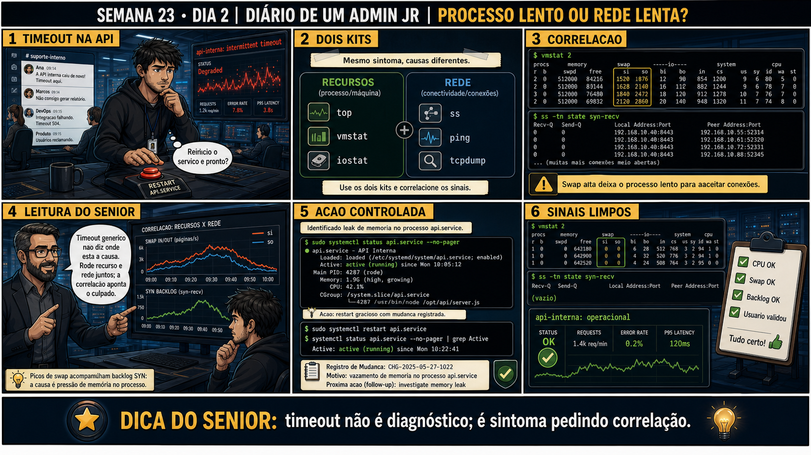

Semana 23 · Dia 2 — Consolidação | Nível Júnior — Redes
Processo e Rede Juntos
"processo rodando" e "porta respondendo" são duas afirmações diferentes — confirme as duas separadamente
ANTES DE ALTERAR, OBSERVE. DEPOIS DE ALTERAR, VALIDE.
1. O chamado
#2302
PRIORIDADE ALTA
11:20
aberto por: suporte N1
host: srv-app-14 · serviço: aplicação na porta 8080
"A aplicação na porta 8080 não responde. Já reiniciei o serviço duas vezes e continua igual."
Reiniciar não resolveu nada. O que você confirma antes de tentar de novo?
💡 Passa o mouse nas palavras destacadas pra ver uma dica rápida — clica se quiser a explicação completa com analogia.
2. Antes de ver as opções — tenta responder
🧠 Recall ativo: por que um serviço pode aparecer como "active (running)" no systemctl status e
ainda assim não responder na porta esperada?
systemctl status confirma que o PROCESSO está rodando — o binário foi iniciado e o systemd não o
considera falho. Mas isso não garante que o processo conseguiu abrir e escutar a porta esperada: ele
pode ter travado internamente depois de subir, pode estar configurado pra escutar noutra porta por
engano, ou pode ter falhado silenciosamente ao fazer o bind (porta já em uso por outro processo, por
exemplo). "Rodando" e "escutando na porta certa" são duas confirmações diferentes — a segunda exige
ss -tlnp, não só systemctl status.
3. Questão comentada — clica numa alternativa
systemctl status confirma "active (running)". ss -tlnp | grep 8080 não retorna
nenhuma linha. O que essa combinação de evidências indica?
💡 Analogia do Sênior para Fixar: O princípio fundamental de 02 PROCESSO E REDE JUNTOS é como o alicerce de sustentação de um viaduto: garante que a estrutura de comunicação suporte alto tráfego sem colapsar.
4. Decodificador de conceitos
Clica em qualquer termo pra ver a definição completa e uma analogia do dia a dia:
5. Ferramentas e leitura da evidência
| Teste | Confirma |
|---|---|
| systemctl status | Se o processo está rodando (nível processo). |
| ss -tlnp | Se algo está de fato escutando na porta esperada (nível bind local). |
| nc -zv de fora | Se a rede permite alcançar essa porta externamente (nível rede/firewall). |
--- teste 1: o processo está rodando? ---
$ systemctl status app.service
● app.service - Minha Aplicação
Active: active (running) since Sun 2026-09-01 16:00:00
--- teste 2: está escutando na porta certa? ---
$ ss -tlnp | grep 8080
(nada retornado)
❌ processo rodando, mas NADA escutando em 8080
--- investigando a causa do bind ---
$ journalctl -u app.service --since "10 min ago" | tail -5
Sep 01 16:00:05 app[1234]: Configurado para escutar em 8081, não 8080
❌ causa encontrada: porta errada no arquivo de configuração
--- teste 3 (só seria necessário SE o teste 2 tivesse confirmado escuta) ---
$ nc -zv 10.10.10.50 8080 # de outra máquina
nc: connect to 10.10.10.50 port 8080 (tcp) failed: Connection refused
# esperado, já que nada escuta ali — não é preciso investigar rede além disso
5.1 O painel 4 da prancha de hoje mostra o júnior pulando direto pro teste de rede (nc de outra máquina), sem antes confirmar localmente se algo está escutando
Um colega testa direto de outra máquina, vê "connection refused", e já assume que é firewall.
Por que testar direto de outra máquina, pulando o teste local com ss -tlnp,
pode levar a uma conclusão errada sobre a causa?
💡 Analogia do Sênior para Fixar: Diagnosticar anomalias em 02 PROCESSO E REDE JUNTOS é como o eletricista usando o multímetro no quadro de disjuntores: mede a passagem de sinal no ponto exato da falha.
5.2 "Reiniciar o serviço não resolve nunca?"
Um colega, depois de ver esse chamado, pensa que reiniciar serviço é sempre a ação errada.
Por que reiniciar o serviço PODE ser a ação certa em outros cenários, mesmo
tendo sido o erro específico neste chamado?
💡 Analogia do Sênior para Fixar: Aplicar as boas práticas de 02 PROCESSO E REDE JUNTOS é como o protocolo de segurança da aviação: elimina pontos únicos de falha e garante previsibilidade operacional.
6. Procedimento profissional
- Antes de reiniciar qualquer coisa, confirme com systemctl status se o processo está rodando.
- Confirme com ss -tlnp se algo está de fato escutando na porta esperada.
- Se não estiver escutando, investigue configuração e logs (journalctl) antes de qualquer ação.
- Só teste conectividade externa (nc de outra máquina) depois de confirmar que a escuta local está ok.
- Reinicie o serviço só depois de ter uma hipótese de causa que reiniciar realmente resolveria.
7. Laboratório guiado — marca conforme for testando
Segurança: execute os testes apenas em VMs descartáveis e confirme nomes de discos, hosts e arquivos antes de cada comando.
- CENÁRIOAção: Crie um cenário real de "processo rodando, porta errada" — sem isso os comandos de hoje não têm nada de anormal pra mostrar.$ sudo tee /etc/systemd/system/app-teste.service >/dev/null <<'EOF' [Unit] Description=App de teste (porta errada de proposito) [Service] ExecStart=/usr/bin/ncat -l 8081 [Install] WantedBy=multi-user.target EOF $ sudo systemctl daemon-reload $ sudo systemctl start app-teste.service $ systemctl status app-teste.service | grep Active $ ss -tulpn | grep 8080
🔍 Detalhar esse comando
- ss
- Substituto moderno do netstat — lista sockets de rede (conexões ativas e portas em escuta).
- -t
- Mostra sockets TCP.
- -u
- Mostra também sockets UDP.
- -l
- Mostra só sockets em modo listen (escutando por conexões), não conexões já estabelecidas.
- -p
- Mostra o processo (PID e nome) responsável por cada socket — normalmente exige sudo pra ver processos de outros usuários.
- -n
- Mostra portas e endereços em formato numérico, sem tentar resolver nomes — mais rápido e evita depender do DNS só pra ler o resultado.
Resultado esperado: Active: active (running) no systemctl, mas ss -tulpn | grep 8080 não retorna nenhuma linha — o processo está de pé, só que escutando na porta ERRADA (8081, não 8080).Por que fizemos isso: só criando esse descompasso de propósito você reproduz o sintoma exato do chamado #2302 na sua própria VM, em vez de ler sobre ele.Cilada comum: só em VM descartável — e anote o nome do arquivo de unit (app-teste.service), você vai removê-lo no teardown.Se o seu resultado foi diferente
"ncat: command not found" → instale comsudo apt install ncat(do pacote nmap-ncat) ou troque porExecStart=/usr/bin/nc -l -p 8081se o seu netcat aceitar a flag -p. - Numa VM de laboratório, configure um serviço simples pra escutar numa porta errada de propósito, e confirme com systemctl status que ele aparece como rodando.Resultado esperado: active (running), mesmo com a porta errada.
- Confirme com ss -tlnp que a porta esperada não tem nada escutando.Resultado esperado: nenhuma linha retornada pra porta esperada.🧑🏫 Aqui entra o Mentor (em breve): se você não souber onde olhar a configuração de porta do serviço, este é o ponto onde o chat com o Sênior-IA vai te ajudar a localizar o arquivo certo.
- Corrija a porta na configuração, reaplique, e confirme com ss -tlnp que agora está escutando.Resultado esperado: linha aparecendo em ss -tlnp pra porta correta.
- Teste conectividade de outra VM com nc -zv, confirmando o fluxo completo funcionando.Resultado esperado: conexão bem-sucedida do ponto de vista externo também.
- CENÁRIOAção: Pare e remova o serviço de teste — nada de unit de teste esquecida no systemd, chamada por engano às 3 da manhã meses depois.$ sudo systemctl stop app-teste.service $ sudo systemctl disable app-teste.service $ sudo rm /etc/systemd/system/app-teste.service $ sudo systemctl daemon-reload $ systemctl status app-teste.service 2>&1 | head -3Resultado esperado: "Unit app-teste.service could not be found" — o serviço de teste sumiu completamente do systemd.Por que fizemos isso: unit de teste esquecida continua aparecendo em systemctl list-units e pode confundir o próximo diagnóstico, fazendo alguém achar que existe um serviço real ali.Cilada comum: apagar só o arquivo sem rodar
daemon-reloaddepois — o systemd mantém a unit em memória e ela continua aparecendo, dando a falsa impressão de que a remoção não funcionou.Se o seu resultado foi diferente
Ainda aparece em systemctl list-units --all → rodesudo systemctl daemon-reloadde novo e confirme comsystemctl list-units --all | grep app-teste.
8. Validação e encerramento
- "Processo rodando" (systemctl) e "porta escutando" (ss) são duas confirmações diferentes.
- Connection refused de fora pode ser firewall OU ausência de processo escutando — teste local primeiro.
- Reiniciar sem diagnosticar é o erro, não reiniciar em si — a ação certa depende da causa confirmada.
- A ordem correta é sempre: processo → escuta local → conectividade externa.
Rollback e limites
Os testes de diagnóstico (systemctl status, ss, nc) são observação pura, sem
risco. O cuidado real é o hábito de reiniciar por impulso: em produção, reiniciar um serviço sem entender a
causa pode mascarar temporariamente um problema que volta a acontecer, ou pior, derrubar conexões ativas de
usuários sem necessidade real.
💡 Sobre repetição espaçada: "confirmar cada camada separadamente antes de
agir" continua sendo o fio condutor do curso inteiro — hoje aplicado à dupla processo+rede, ontem a
DNS+firewall. O Anki vai reforçar esse padrão como preparação direta pra Missão Final da Semana 24.
9. Resposta final
Alternativa correta: A. Nesta aula, a combinação de evidências apontou
processo rodando mas sem escuta na porta esperada — problema de bind/configuração, não de rede externa. O
ponto central do caso é este: "processo rodando" e "porta respondendo" são duas afirmações diferentes —
confirme as duas separadamente.
🔓 O que você desbloqueou hoje
Capacidade de separar diagnóstico de processo e de rede numa investigação
única, evitando a armadilha de reiniciar sem entender a causa. Amanhã você automatiza parte dessa
verificação com um script bash de healthcheck.